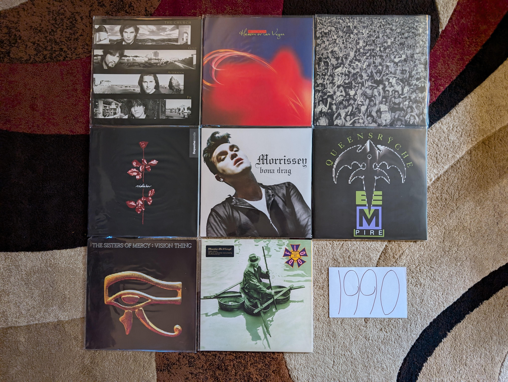

1990 Albums¶
The first year of the 90s almost feels like an alternate potential future for pop music. While most of these albums are a natural extension of the 80s sounds, you can sense that the artists wanted to go to a bigger, new place for the new decade. That said, we aren’t really seeing the roots of what would actually be the predominant trends of the decade. So to me, 1990 is almost like an extreme version of the 80s that hints at a different direction that pop could have gone. Maybe my perception is colored by the list of artists that made my my favorite work from the year. Each one of these musicians/groups rose to fame in the 80s and is transitioning into the new decade, in most cases with an obvious attempt to modernize or revitalize their sound. The only one of these records I heard at the time would have been the George Michael album. I was not a fan back then.
{kind=link}
Gold Afternoon Fix by The Church - After the breakout success of Starfish they comfortably retreat back into cult-indie status in the new decade. There are very few bands who have hovered under the radar for decades more successfully than these guys. Not quite goth, not quite psychedelic music, they are a genre unto themselves. It starts to sound a little too samey to me on the albums after this, and this is their last compelling full album statement for me. [Memory: Like so many people, I found these guys via the film Donnie Darko. Unlike most people, I started my journey here, because it was what I could buy on eMusic for a couple bucks.]
Heaven or Las Vegas by Cocteau Twins - 4AD would start to morph into something else after the 80s wrapped, but we get one more record in the classic sound of that massively influential label. This is quite a bit brighter and slightly more accessible that their 80s work, but this is still the kind of atmospheric, inventive dream pop these guys had been making since the late 70s. This is one of those cases where a group was destroyed by their eventually mainstream acceptance. In many ways, so was the label they were signed to. [Memory: It always confused me how difficult it was to buy a vinyl copy of this since it was successful in the era when people were still buying that format. Their much more obscure early records were far more widespread in both original and reissue form.]
Violator by Depeche Mode - Their massive hit, and for most people, their definitive album. It adds a harder industrial edge to their existing synthpop formula. It does feel like a blueprint for how an 80s electronic band could transition to the brave new world of the 90s. Martin Gore doesn’t get enough credit for how good he is at writing ballads, and “Waiting for the Night” is one of his greatest works. [Memory: I was so into these guys in the late 90s MP3 era. I probably downloaded most of this record off of Napster back in the day. I don’t think I actually bought at copy until maybe 2010.]
Listen Without Prejudice Vol. 1 by George Michael - [1991 FAVORITE] - This is such a brave departure, but it also manages to summarize the essential qualities that made him a global pop superstar. At the time, I don’t know that it was understood how central he was to the production of his solo work, but this is a unique and spectacular recording. There is such a warm, intimate sound here. The ballads like “Praying for Time”, “Cowboys and Angels”, and “Mothers Pride” are probably the best work he ever put to record. The lead single “Freedom! ‘90” is one of the songs that created the 90s. [Memory: My opinion of this album has changed remarkably over my lifetime. I remember when my sister bought it back then, I couldn’t stand it. Every time that video for “Freedom” came on VH1, I changed the channel. By around 2007 I was digging that single. By 2014 it was one of my favorite albums of all time. By the time he passed in 2016, I fully understood and mourned the genius that we had lost.]
Bona Drag by Morrissey - In both his time with The Smiths and in his solo career, there have been a preponderance of compilations. This collection of early singles from his solo work is perhaps the most essential. It feels like most of his finest moments from the first few years were littered among a collection of singles and EPs. You could almost live with The Best of Morrissey but then you wouldn’t have the outstanding “Piccadilly Palare” and the essential “Will Never Marry”. [Memory: This was the compilation that made me change my mind about including that kind of release on this list. So many of my favorite songs would be left out in the cold if I didn’t include this record.]
Empire by Queensryche - The pixelated logo on the front of the record almost feels like a visual analogy for a quintessentially 80s metal band consciously updating their sound for the new decade. It is a mostly successful refresh that adds some electronics and slick production to create something that is clearly trying to be a bit futuristic. They would never really recover from loosing the edge they had on the earlier albums, and this is guilty of trying to be a little too Pink Floyd at times. That said, their commercial peak is a largely successful work that does a great job mixing radio friendly power ballads with their trademark prog tendencies and complex guitar solos. [Memory: I remember hearing “Silent Lucidity” on the radio, driving home from class at the Penn State Berks campus. That ballad is a poor representation of their work at large, but it would be my point of entry to their outstanding catalog.]
Vision Thing by Sisters of Mercy - The brevity of their recorded output has greatly enhanced their profile. Each of the three records is a a big shift in scope and sound. This must have sounded incredibly fresh and exciting at the time, and it really foreshadows the various electronic goth acts that would emerge in the decade to come. I wish there were more albums, to see where this was all leading, but maybe it saved us from the inevitable decline. [Memory: I knew almost nothing about this record when I bought a MoFi reissue of it for cheap. I was a massive fan of the first two, much more punk rooted albums, and had heard very mixed reviews of this more electronic affair. I loved it immediately.]
Flood by They Might be Giants - A transitionary work between their early novelty song days, and the pop eclecticism that continues to our current day. Jokey pop gem “Particle Man” would have fit right in on either of the first two records. “Birdhouse in Your Soul”, perfectly balances their early and later sound, and is one of the greatest pop songs ever written. Tracks like “Sapphire Bullets of Pure Love” give the first indication of the experimental pop we would see increasingly as their career developed. [Memory: Around 2010, YouTube was starting to become a massive repository of historical footage and a profound source of nostalgia. One of the early videos I remember watching, was a video of the group playing “Birdhouse” on the Carson show with the Doc Severenson band (Doc played a blistering trumpet solo in the bridge). It is still posted up there, and I’m glad that I can go back any time i want and relive this very early 90s moment.]